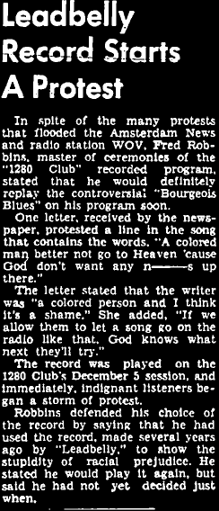

Quintin Hammi
The unifying feature of any form of early country blues is first-person descriptions of the hardship faced by rural Black laborers in the south. Racial oppression primarily affected the early development of country blues mainly in that it exacerbated this hardship. Early country blues musicians rarely called out Jim Crow practices explicitly in their songs, instead opting for musical story telling of the every day lives of rural African Americans. In other words, while there isn't clear evidence that early country blues musicians took an activist role against Jim Crow practices, the content of the genre as a whole would be much different if not for the impact that racial inequality had on the lives of Black laborers in the south.
However, there are a few songs that do call out the racial caste system explicitly, most of which started to emerge after the late 1930s. Protest songs in country blues from this time period was still rare, but increased access to wider audiences paved the way for musical activism by some blues musicians. On this page, I will discuss a few aspects of how racial segregation and inequality affected the development of blues in chronological order.
Early development in the Mississippi Delta region
One of the most important regions (if not the most important) for the development of blues as a whole is the the Mississippi delta. The Delta's economy relied heavily on Black Americans for hard labor jobs, especially in cotton production. The working conditions were hellish in their own right, and this was intensified by the racial caste system of the deep south. Folklorist Alan Lomax writes:
[Black laborers were] pushed beyond their physical limits, constantly insulted, unable to talk or fight back, and knowing that no one cared whether they lived or died, their hollers voiced the epitome of despair and, sometimes, rage. In truth, they were like orphans, with both parents dead, left to cruel and indifferent caretakers.1Had it not been for the mistreatment of Black laborers in the south, country blues as we know it may not have developed at all.
The Rise of "Race Records" (1920s)
Following the unexpected success of Crazy Blues in 1920, record companies began recording and marketing blues music to African American audiences. This sold very well, and the marketing category was given the title "race music."2 While blues certainly existed prior to race records, much of the existing historical documentation of country blues we have today came from race records.
The record companies' choice to label the blues as "race music" isn’t surprising given the racially segregated culture at the time. Black people were forced to use separate bathrooms, water fountains, buses, etc., and music wasn't any different. More specifically, the categorization of people and culture by race was very heavily emphasized in the Jim Crow era. Perhaps not providing a racial label of music would have been seen as contaminating the cultural practices of the white majority.
Examples of Jim Crow in early race records
Blind Lemon Jefferson's "'Lectric Chair Blues"lyrics
One particular aspect of racially targeted hardship during the Jim Crow era is the legal system: In the south, ~75% of those receiving the death penalty from 1908-1965 were Black.3 In fact, the death penalty itself was impactful enough to be featured in many popular country blues songs. The lyrics of “‘Lectric Chair Blues” by Blind Lemon Jefferson provide a heartbreaking first-person account of someone receiving the death penalty, and later switches to the perspective of their partner. The inclusion of the lyric “I sat in the electrocutin' room, my arms folded up and cryin’.” shows that Blind Lemon empathizes with the suffering of people receiving the death penalty, and the lyric “I’ve seen wrecks on the ocean and wrecks on the deep blue sea. But none like that wreck in my heart when they brought my electrocuted daddy to me.” demonstrates the impact that the death penalty has on the family of a convicted person. While the song does not explicitly reference race in any way, the fact that ~75% of those sentenced to death during this period were Black certainly suggests that “ ‘Lectric Chair Blues” is meant to tell a story of suffering that is specific to African Americans due to racial discrimination in the legal system.
Walter Davis's "Red Cross Blues"lyrics
Another aspect of racially targeted hardship during the Jim Crow era was the preferential treatment of white Americans during emergencies. Most notably, the impact of the Great Mississippi Flood of 1927 and the Great Depression on country blues was exacerbated by the mistreatment of Black Americans during these events. In the Great Flood of 1927, the American Red Cross was being pressured by local governments to prioritize aid toward white Americans and even leave Black Americans stranded. An investigation by the Colored Advisory Commission, a government organization established with permission from Herbert Hoover, suggested that African Americans were assigned to the areas of refugee camps that were the most dangerous, being held in refugee camps against their will, and being forced to work. Additionally, the Red Cross largely avoided any form of advocacy, further exacerbating the issue.4
There are numerous blues songs which allude to country blues musicians' perception of the humanitarian relief during the Great Flood of 1927. One of the most explicit, however, is “Red Cross Blues” by Walter Davis, recorded in 1933. The lyrics of this song are consistent with the operations of the Red Cross during both the Great Flood of 1927. “The Red Cross is helping poor people who cannot help themselves” is a more-or-less accurate description of the operations of the Red Cross during these disasters. Additionally, the lyrics “'cause the Red Cross won't help us, what in the world is we going to do?” and “The Red Cross has cut us off, man, and left us all alone” is likely referencing the institutional mistreatment of African Americans despite ongoing humanitarian efforts. In particular, the lyric “My little children was screaming, crying "Papa we ain't got no home"” suggests that the protagonist’s family was stranded and denied relief after their home was lost to the Great Flood of 1927. Walter Davis was originally from Mississippi and moved to St. Louis just two years before the disaster, so he likely had friends and loved ones who were affected by it.5
In order to escape the harsh realities of being a Black worker in the Deep South, many workers emigrated north to find more stable jobs and better working conditions. There were many other factors contributing to this as well: the Great Flood of 1927 destroyed many Black workers’ homes in Mississippi, and Northern cities became popular destinations due to industrial job opportunities, alongside the broader historical legacy of earlier abolitionist movements in some Northern states.6
Consequently, the fantasization of traveling north became a major theme of country blues music. One major manifestation of this in country blues music is through the imagery of trains, likely because this is the transportation method that Black Americans had most access to. Additionally, the sounds of train callers inspired melodies and lyrics in country blues music. It is hard to overstate how common trains were featured in country blues songs.
The Great Migration as it Appears in Country Blues
"Railroadin' Some" (Henry Thomas, 1929)lyrics
Of all the country blues songs that are about trains, this may be the most about trains. Henry Thomas's lyrics describing nonstop train destinations suggests that this song was likely inspired by the sounds of train callers. The entire song traces a nonlinear path from Texas to Chicago. It is likely that the nonstop eighth note rhythm held on a single chord is meant to emulate the "chugging" sound of a train, with the pan flute emulating a train whistle. In both the first and second parts of the song, Chicago is the final lyric, suggesting that he is ultimately headed for Chicago. "I'm on my way but I don't know where" suggests this song is a reflection of a desire to escape out of Texas, without having a destination in mind. Another possible interpretation is that the song stops at Chicago because that's simply where the railroad ended; the protagonist is traveling as far away from Texas as possible. This song appears to be autobiographical, as Henry Thomas initially made his career out of traveling and singing on the Texas railroad lines.7 This song does not suggest any nuanced ideas about the impact of racial inequality toward Black Americans in any obvious way, which supports the fact that very few early country blues records mention Jim Crow explicitly.
"Sweet Home Chicago" (Robert Johnson, 1936)lyrics
Another song with Chicago as the destination. Robert Johnson's conflation of California with Chicago is interesting. Perhaps he genuinely thought Chicago was in California, but at the very least we can interpret Chicago and California as representing urban locations away from the deep south. The latter is supported by the line "from there to Des Moines Iowa", since this is also an urban location outside the deep south. Furthermore, Robert Johnson was living in Texas at the time, so the inclusion of the lyric "To my sweet home Chicago" suggests that he is fantasizing about a "sweet" life in the city. Again, this song does not allude to racial inequality in any obvious way. That being said, the collective dream of Black Americans to emigrate out of the south was supported by the profound differences in opportunities for Black workers due to Jim Crow.
Fun fact: this song became a legendary blues standard and was even sung by Barack Obama and B.B. King at the White House in 2012.8
Consistent with what we've seen so far, very few country blues musicians actually called out Jim Crow explicitly. Perhaps this is due to the pressure from Jim Crow society to keep silent about racial inequality, or perhaps blues musicians simply weren't interested in politics. Either way, the status of country blues as a passive reflection of the every day hardships of rural African Americans in the south changes slightly as country blues music moves from rural communities to urban. Popular music in general, especially jazz music, became platforms for activism, and the genres heavily influenced eachother as blues musicians settled into cities.
Additionally, racial segregation in the military became a controversial topic during World War II, drawing the attention of white audiences as well. We can see this manifest in music, as the term "race records" turned to "rhythm and blues" during World War II. The music industry became more sensitive to racist labeling, possibly because African Americans were a significant source of revenue. Additionally, this may have helped to market it to White audiences, as it still separated music created by Black people, without any overt references to race in the title of the category.9
Notable Protest Music
"The Bourgeois Blues" by Lead Belly (1938)

(click to enlarge)
The earliest examples of country blues music that called out racial inequality are from the late 1930s. One of the most significant early examples of this is “The Bourgeois Blues” by Lead Belly, written in 1937 and inspired by his trip to Washington D.C. with folklorists John and Alan Lomax. The song most specifically comments on both the racial inequality and class inequality he experienced in Washington D.C. In particular, the verse “Me and my wife we were standing upstairs / I heard the white man say'n I don't want no niggers up there / Lord, he a bourgeois man” points out the racial aspect of class inequality, and the verse “Home of the brave, land of the free / I don't wanna be mistreated by no bourgeoisie” takes a direct stance against classism in the "Bourgeois town.” This song is one of many of Lead Belly’s later protest songs.
Lead Belly, living in New York at the time, was unusually direct about racial inequality compared to other country blues musicians. This may be due to his loose affiliation with the American communist party, but there is little direct evidence for this. Following the broadcast on the radio, Lead Belly received major backlash for the song, leading to protest against the song in Amsterdam. Consequently, Lead Belly chose to play it again possibly as a direct opposing response to the protests. This is evidence that the emergence of radio helped to catalyze discussions of racial inequality, as it allowed for a crude form of nationwide communication from popular music artists, who were largely Black. That being said, there was still major racial gatekeeping and censorship in radio at the time, so radio may not have played as important of a role as one may expect.10
"Southern Exposure" album by Josh White (1941)
Josh White (born 1914) was mainly a member of the gospel music and piedmont blues tradition before expanding his repertoire to include urban blues and jazz after moving to New York in 1931. Counter to mainstream blues culture, he was a civil rights activist and recorded many songs that explicitly condemn segregation.11
The most prominent example of this is in his 1941 "Southern Exposure." The entire album is dedicated to calling out racial inequality in the United States, with one song literally titled "Jim Crow Train." For example, in the first track, "Southern Exposure," White includes the lyrics "I ain't treated no better than a mountain goat \ Boss takes my crop and a poll tax takes my vote", explicitly pointing out mistreatment by white bosses and the classist poll tax during this time period. For the sake of brevity, I will only include a detailed analysis of "Uncle Sam Says."The entirety of "Uncle Sam Says" is dedicated to bringing attention to racial segregation in the military. The first verse includes the lyrics "Your place is on the ground \ When I fly my airplanes, don't want no negro around" highlighting the segregation in the U.S Army during WW2. The second verse includes the lyrics "Uncle Sam says, "Keep on your apron, son \ You know I ain't gonna let you shoot my big navy gun"", pointing out the relegation of Black Americans to menial labor in the U.S Navy. More generally, verse 3 says "When I got to the army, found the same old Jim Crow \ ... \ But when trouble starts, we'll all be in that same big fight." To clear any previous doubt, this lyric directly spells out that White finds Jim Crow and racial segregation to be senseless and irrational. He makes this more clear with verse 4's lyrics "If you ask me, I think democracy is fine \ I mean democracy without the color line". The final line, "Let's get together and kill Jim Crow today" serves as a call-to-action to the listener to speak out against Jim Crow and segregation. The decision to talk about racial segregation in specifically the military is likely intentional, as there was hot debate on this aspect of segregation at the time. Additionally, the choice to use Uncle Sam as the antagonist of the song demonstrates that White sees this segregation as a nationwide systemic issue rather than blaming any specific person in power.
According to White, this track was inspired by his visit to his brother in basic training (https://www.elijahwald.com/joshprotest.html). This entire album recieved national attention, and eventually reached the psyche of President Roosevelt. Josh White was then invited to perform and chat with FDR about the racial inequality plaguing the United States, furthering his activism for anti-segregation.12
1Alan Lomax, The Land Where the Blues Began (New York: Pantheon Books, 1993), p. 275
2 Cussow, Adam (2002). Seems Like Murder Here. Chicago: University of Chicago Press. p. 160.
3 https://ejusa.org/resource/racial-inequity-and-the-death-penalty/
4 Barry, John M. Rising Tide: The Great Mississippi Flood of 1927 and How It Changed America. Simon & Schuster, 1997, pp. 152–153.
5 https://web.archive.org/web/20150409014954/http://webpages.charter.net/davidmmiller/deltabirths.htm "Birthplaces of Mississippi Blues Artists". Webpages.charter.net
6 Encyclopaedia Britannica, "Mississippi River Flood of 1927," https://www.britannica.com/event/Mississippi-River-flood-of-1927.
7 Shadwick, Keith (2001). "Henry Thomas". Encyclopedia of Jazz & Blues. Ann Arbor, Michigan: Quintet Publishing. p. 650. https://archive.org/details/encyclopediaofja0000shad/page/650/mode/2up
8 Matt Compton, “President Obama Sings ‘Sweet Home Chicago,’” The White House (Archived), February 22, 2012, https://obamawhitehouse.archives.gov/blog/2012/02/22/president-obama-sings-sweet-home-chicago
9 "Rhythm and Blues." Encyclopedia of African-American Culture and History. Encyclopedia.com, 2005. Accessed June 16, 2026. https://www.encyclopedia.com/history/encyclopedias-almanacs-transcripts-and-maps/rhythm-and-blues
10 Stoever, Jennifer. 2019. “Black Radio Listeners in America’s ‘Golden Age.’” Journal of Radio & Audio Media 26 (1): 119–33. doi:10.1080/19376529.2019.1564997.
11 "Josh White Jr". Joshwhitejr.com. 1998-06-26. https://web.archive.org/web/20151017051030/http://www.joshwhitejr.com/biojwsr.html
12 Elijah Wald, “Josh White and the Protest Blues,” https://www.elijahwald.com/joshprotest.html.